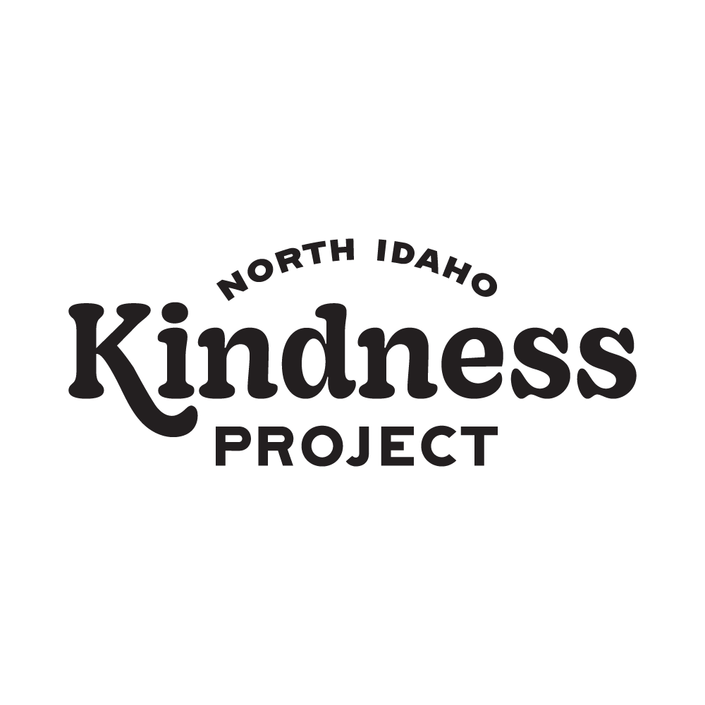
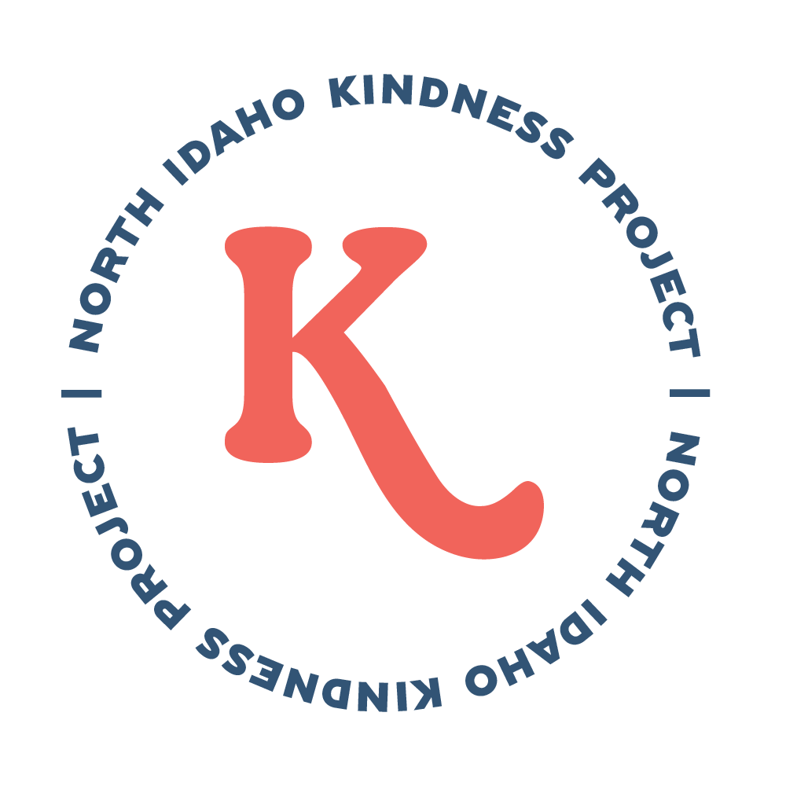
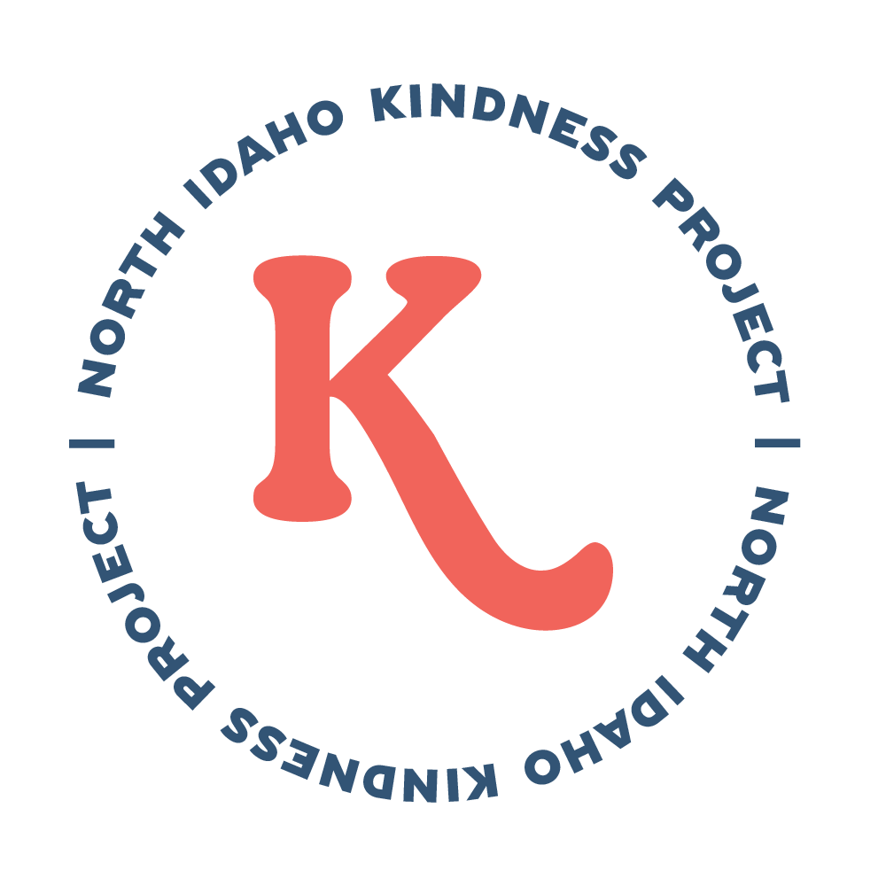

In my internship with Fixed Focus Media, I helped out with creating logo variations for a nonprofit organization known as North Idaho Kindness Project (NIKP). I did not create the main logo, but I helped in making subtle variations of it for use in other areas of web design, social media, and overall branding of the organization. In addition to logo variations I helped in creating iconography graphics, and creating their new website.


 
